Пропорции и баланс немецкого дога
Никки Риггсби
Опубликовано 01.01.2011
Фрагменты статьи, заключенные в двойные кавычки, взяты из стандарта породы дог, вступившего в силу 28 апреля 1999 года, доступного на сайте AKC (American Kennel Club). Изменения стандарта, принятые в 2010 году, не касались баланса или пропорций.
При первом взгляде на породистую собаку обычно рассматривают отдельные ее части: голову, окрас, переднюю и заднюю часть, хвост. По мере более внимательного изучения происходит переход к восприятию собаки в целом. "Собака в целом" не означает, что типаж породы менее важен. Это значит, что типаж породы определяется всей собакой, а не только отдельными частями.
Сбалансированная, цельная собака не просто имеет отдельные или хорошие все части. Эти части находятся в правильном соотношении друг с другом. Стандарт описывает дога так: "...его общее строение должно быть сбалансированным...." и "Это всегда единое целое - Аполлон среди собак".
Словарь определяет баланс как "гармоничное или правильное соотношение". При оценке судьи видят собаку в целом и определяют какие собаки имеют правильный баланс, присущий породе до того, как они увидят какие-либо детали. Если общая форма и баланс неправильные, эта собака, скорее всего, не будет оцениваться.
Пропорция определяется как отношение между предметами (или частями предметов) в отношении их сравниваемого количества, величины или соотношения.
| 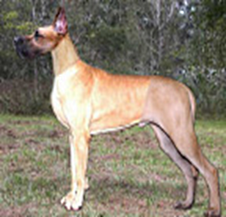 | Оцените эту собаку. Где он хорош? Что бы вы изменили? Как у него с балансом? Его составные части, в общем-то, правильные. Но они не сочетаются друг с другом. Эта фотография преувеличивает "состояние неравновесия". Я собрала эту собаку из фотографий нескольких собак. Он выглядит так, как будто его собирала комиссия. К сожалению, слишком много собак в ринге сегодня выглядят так, как будто их собирали коллективно. |
| 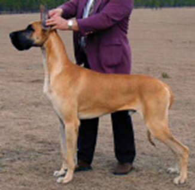 | Взгляните на другую картинку. Здесь собака представляет единое целое, сбалансированное и естественное. Чувствуете разницу? |
Баланс
Однако, чтобы понять баланс нужно не только смотреть на картинку. Существуют точные пропорции, на которые следует обратить внимание. Некоторые из них взяты непосредственно из стандарта породы. Некоторые будут вытекать из стандарта. Некоторые - из моего более чем тридцатилетнего опыта оценки собак. Можно не соглашаться со мной по поводу последней категории, но это - всего лишь начало дискуссии.
Первая фраза стандарта" гласит: "Немецкий дог сочетает в своем царственном облике достоинство, силу и элегантность с большим размером и мощным, хорошо сформированным мускулистым телом". Сила, мощь и мускулистое тело - это слова, обозначающие сильную, основательную собаку. Основа баланса для дога - это равное количество большого размера, элегантности и большой силы. Равное сочетание этих трех качеств - часть того, что отличает дога от других пород.
Размер дога - это рост собаки. Стандарт устанавливает минимальную высоту 30 дюймов (около 75см) для кобелей и 28 дюймов (70см) для сук (а желательно больше). Эти минимальные значения относятся к шестимесячным щенкам, когда они впервые выходят на ринг. В иллюстрированном стандарте (здесь и далее - Американского клуба породы– прим.перев.) говорится, что средний рост взрослых особей составляет 34 дюйма (85см) для кобелей и 32 дюйма (80 см) для сук. Там также говорится, что при прочих равных условиях более крупные доги предпочтительнее. Большой рост - это достоинство, хотя, конечно, не единственное. Если это хороший дог, с породным типом, сбалансированностью и здоровьем, он не может быть слишком высоким. Многие характеристики придают нашим собакам элегантность. Длина головы, шеи, ног имеют большое значение для элегантности. Углы и изгибы, "гладкое мускулистое тело" также вносят свой вклад, равно как и "хорошая подтянутость". Многие определения элегантности включают грациозность, которая происходит из плавных непрерывных чистых линий и изгибов.
Основательность, сила и мощь проявляются в хорошей мускулатуре и костях. Глубина и ширина являются характеристиками корпуса и грудной клетки. Кобель "массивнее", чем сука, но оба массивны. Массивность должна быть уравновешена элегантностью.
Суки на фото ниже иллюстрируют баланс размера, элегантности и мощи; в них есть гармония.
| 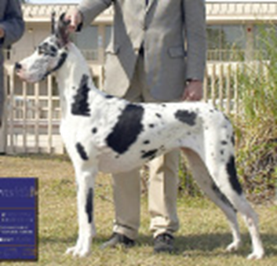 | 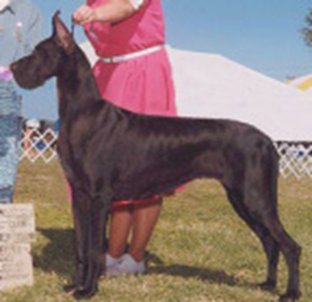 |
| 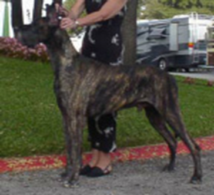 | 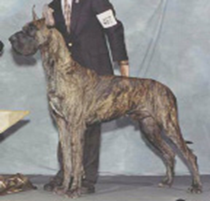 |
Кобели на фото вверху также обладают элегантностью, размером и мощью.
Квадрат
Обращайте внимание на длину головы, шеи и ног.
Стандарт гласит, что пропорция роста к длине туловища у догов - квадрат, при этом у сук допускается немного более длинное тело. В стандарте сказано, что рост измеряется "по плечу". Но там не к чему привязаться, поэтому мы измеряем от холки над высшей точкой плеч до земли. Длина - от точки плеча (сустава между плечом и верхней частью лапы - предплечьем) до седалищной кости.
Поскольку доги высокие, а холка у них часто высоко, намного выше спины, оптическая иллюзия может повлиять на то, что видит судья. Глаза притягиваются к линии спины, самой длинной горизонтальной линии, как к вершине квадрата. На самом деле, вершина квадрата может быть на пару или более дюймов выше спины. В результате линии собаки, которая выглядит квадратной, на самом деле могут быть вертикальным прямоугольником, более высоким, нежели длинным. Дог, который на самом деле имеет квадратные размеры, будет выглядеть не совсем квадратным, немного длиннее, чем высокий. Однако мы не хотим любой ценой получить четкий квадрат. Важны и основательность, и элегантность. В стандарте говорится, что "грубость или недостаток мощи одинаково нежелательны".
По моему опыту, рост и угловатость дога могут меняться в течение его жизни. Он невысокий и очень угловатый в щенячьем возрасте. В подростковом возрасте, после скачка роста, он становится выше и прямее.
 |
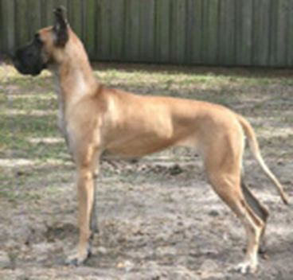 |
| 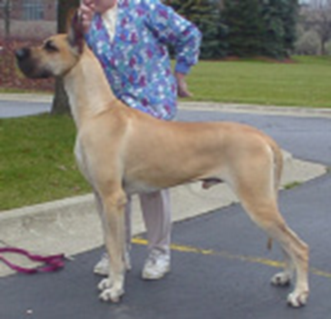 |
Какие из этих собак квадратные? Палевый кобель квадратный, тогда как суки, скорее, укороченные.
Кобели и суки
Стандарт говорит: "Кобель должен выглядеть более массивным, чем сука, с более крупным корпусом и более тяжелым костяком". Чтобы определить пол, не нужно смотреть на вторичные половые признаки. Будучи более массивными, у кобелей больше костяка, более глубокое и широкое тело, более глубокая и широкая голова, а также более высокий рост. Следует обратить внимание, что здесь не говорится, что суки меньше, а кобели - больше. Если сука высокая и плотная с соответствующей элегантностью, а кобель меньше, то это, скорее, в негативе для кобеля, а не достоинства суки.
| 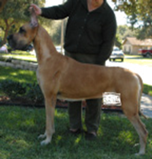 | 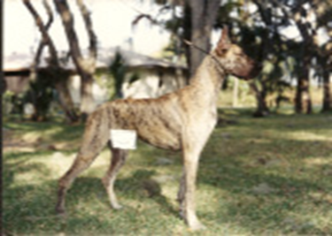 |
Кто из двух догов на фото вверху кобель, а кто сука? Тигровый - это кобель. Кто менее правильно сложен? Когда бы был категоризированный список недостатков, кобель, выглядящий как сука - серьезный недостаток, а сука, похожая на кобеля - незначительный. Поэтому сука более корректна.
В стандарте говорится, что "мужественность кобеля очень ярко выражена в структурном оформлении головы. Голова суки более деликатно сложена".
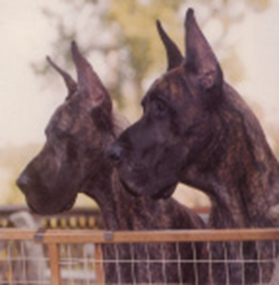
Кто из двух догов на фото слева кобель, а кто сука?
На
фото голова слева - суки, справа - кобеля. Относительные пропорции у обоих
примерно одинаковы.
Длина головы кобеля не намного больше длины головы суки.
Ярко выраженная мужественность проявляется в размерах, глубине и ширине
головы. Кобель имеет более глубокий череп, более глубокую морду и более
выраженныый стоп. Более деликатно сформированная голова суки заметно менее
глубокая и широкая.
Голова
Стандарт ясно описывает пропорции головы, как специфичные, так и производные. Она "прямоугольная, длинная", ее плоскости "прямые и параллельные" и "угловатые со всех сторон". Длина морды равна длине черепа до затылочного бугра.
Голова описана как прямоугольная. Ппрямоугольники должны иметь длину больше ширины (или высоты) и быть одинаковы по высоте на обоих концах. Поэтому прямоугольная голова должна иметь одинаковую глубину черепа, равно как и глубину морды.
Длина морды равна длине верхней части черепа, а глубина черепа и морды не ихменяется. Таким образом, когда голова хорошего дога в профиль разделена по вертикали на стопе, ни череп, ни морда не должны казаться больше друг друга. У некоторых догов морда слишком короткая и мелкая по сравнению с черепом, что делает голову несбалансированной.
Прямоугольный вид должен быть виден и спереди. Это подтверждается тем, что череп имеет "параллельные стороны", "переносица должна быть как можно шире" и "уши должны быть высоко поставлены".
Стандарт описывает стоп как "явно выраженный" "при виде сбоку". Выраженный стоп - это результат работы бровей, а не глубокой впадины между глазами. Как часть маскулинности кобеля, стоп кобеля более выраженный, более высокий, чем у суки. Я считаю, что глубина стопа в породе должна быть правильной, чтобы голова была правильной. По моему мнению, правильная глубина стопа у дога в профиль составляет около двадцати процентов от глубины черепа. Верхняя часть морды примерно на двадцать процентов ниже, чем верхняя часть черепа. Для баланса верхняя губа опускается примерно на те же двадцать процентов ниже челюсти черепа, чтобы сохранить прямоугольную форму.
| 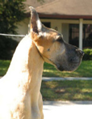 | Голова суки на фото слева прямоугольная - глубина черепа и глубина морды одинаковы. Она длинная, и длина морды равна длине черепа. Помните, что уши находятся на голове, поэтому при сравнении длины морды и черепа затылок находится за ушами. |
Другие головы на фото ниже также правильно пропорциональны и сбалансированы cпереди также прямоугольны
| 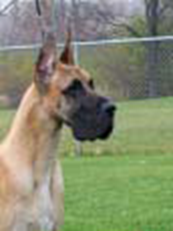 | 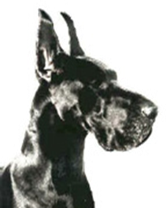 | 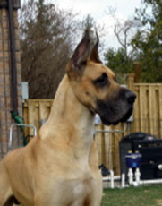 |
| 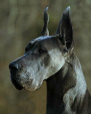 | 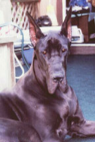 | 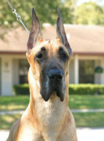 |
Головы также прямоугольны в фас.
Шея
Шея длинная. У сбалансированной собаки шея примерно такой же длины, как и голова. На мой взгляд, средняя ширина шеи примерно равна глубине черепа. Шея должна "плавно перетекать в холку" и наоборот. Правильная шея вносит значительный вклад в элегантность. Собака обладает многими хорошими качествами.
| 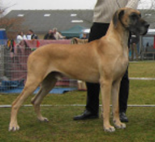 | Короткая шея на фото слева отнимает элегантность и делает ее грубой и неуравновешенной. |
| 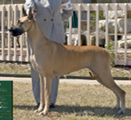 | У суки слева хорошая шея . С более длинной шеей, плавно переходящей в холку и спину, она обладает элегантностью. Как голова сбалансирована с шеей? Шея привлекательной длины. Голова могла бы быть длиннее и больше в целом, с более длинной и глубокой мордой. Эти изменения улучшили бы ее баланс. |
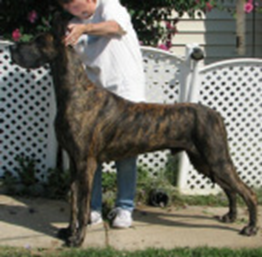 | На фото слева красивая сука с головой и шеей в балансе. Обратите внимание на плавный переход от шеи к холке и спине и плавность линий в целом. Капля воды, помещенная на затылок, непрерывно стекает по крупу и хвосту. Голова и шея лучше сбалансированы друг с другом. Длина каждой из них примерно одинакова. Глубина черепа и ширина шеи на половине расстояния между затылком и холкой примерно равны. Здесь также хорошее соотношение длины ног и глубины корпуса к голове и шее. Все это способствует балансу большого размера с большой мощью и большой элегантностью. |
| 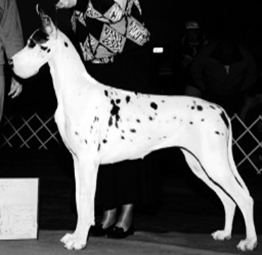 | На фото слева красивая сука с головой и шеей в балансе. Обратите внимание на плавный переход от шеи к холке и спине и плавность линий в целом. Капля воды, помещенная на затылок, непрерывно стекает по крупу и хвосту. |
Передние конечности
В стандарте много говорится о передних конечностях. "Лопатка ... образует, насколько это возможно, прямой угол ... с плечом". Угол, под которым "возвращается" плечо, должен быть равен углу отведения плеча. Концепция плеча под прямым углом родилась благодаря работе Рейчел Пейдж Эллиот и ее книге "Оригинальные шаги собаки". Годы спустя доктор Квентин ЛаХэм оспорил эту степень угловатости на собаках с нормально пропорциональной длиной ног, и он убедил мисс Эллиот, что угол должен быть несколько более открытым, чем девяносто градусов. Действующий стандарт FCI требует угол в 100 градусов.
"Линия от верхнего окончания лопатки до задней части локтевого сустава должна быть перпендикулярна" (земле). "Лопатка и плечо должны быть одинаковой длины". Найдите верхнюю часть лопатки. Отвес, опущенный из этой точки вертикально на землю, должен попасть на заднюю часть локтя, а также на высокую подушечку стопы. Когда собака на ринге издает стонущие звуки, обычно из-за неправильного обращения хэндлера, ее передняя часть выглядит несбалансированной.
Угол наклона лопатки и плеча должен направлять переднюю ногу под центр тяжести собаки для наилучшей поддержки. Передние ноги не должны опускаться под шеей собаки, что происходит при плохих углах или "передней постановке". Когда передние ноги находятся под шеей, корпус не имеет достаточной опоры, и линия верха не будет строгой и ровной.
Обратите внимание на термин "передние конечности". По сути, он означает, что передняя часть собаки, от линии плеч до локтей и вперед, составляет четверть длины собаки. Задние конечности - задняя часть - это еще одна четверть. А между ними - половина длины собаки в профиль. Правильный баланс подразумевает эти пропорции.
Стандарт говорит: "Локоть должен составлять половину расстояния от холки до земли". Я придерживаюсь мнения большинства в недавнем голосовании (хотя и не большинства в две трети), которое считает, что локоть до земли должен быть чуть больше половины, может быть, на дюйм или около того, в зависимости от роста собаки. Элегантность выытекает из длины, в том числе длинных ног. До 1990 года стандарт GDCA не требовал пропорции 50 на 50; стандарт FCI не требует этого и сегодня.
| 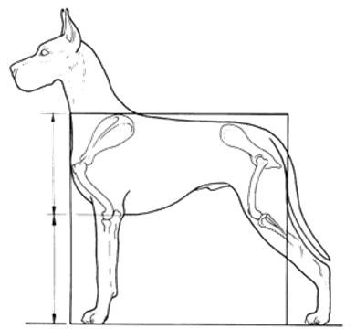 | На фото слева хорошо отведенное назад плечо и хороший выход верхней части ноги. Плечо кажется одинаковой длины с лопаткой. Локоть находится под кончиком лопатки, а линия, проведенная от этих точек, попадает на подушечку стопы. Локоть находится на середине высоты в холке. Я считаю, что немного большая длина ноги придала бы ей больше элегантности, а также сделала бы ее пропорцию ближе к квадрату. |
| 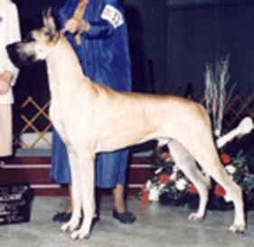 | На фото слева плечо отведено назад, а верхняя часть ноги выходит примерно под тем же углом, так что локоть находится под самым верхним кончиком плеча. Передние ноги находятся под корпусом, а не под шеей. Передние ноги немного длиннее глубины корпуса. |
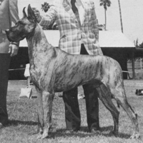 | На фото слева передняя часть собаки хорошо расположена на корпусе. Локоть под точкой плеча. Правую переднюю лапу не видно, так как она выходит под собаку за передней частью груди. |
| 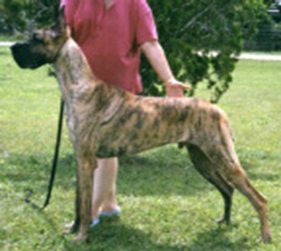 | На фото слева плечо отодвинуто назад, но лопатка не ввыходит под нужным углом. Отсутствие выхода приводит к тому, что передние ноги оказываются под шеей и поэтому не обеспечивают поддержку самой тяжелой части собаки. Обратите внимание, как это влияет на линию подгрудка; она намного длиннее от локтя до задних конечностей по сравнению с собаками выше. |
| 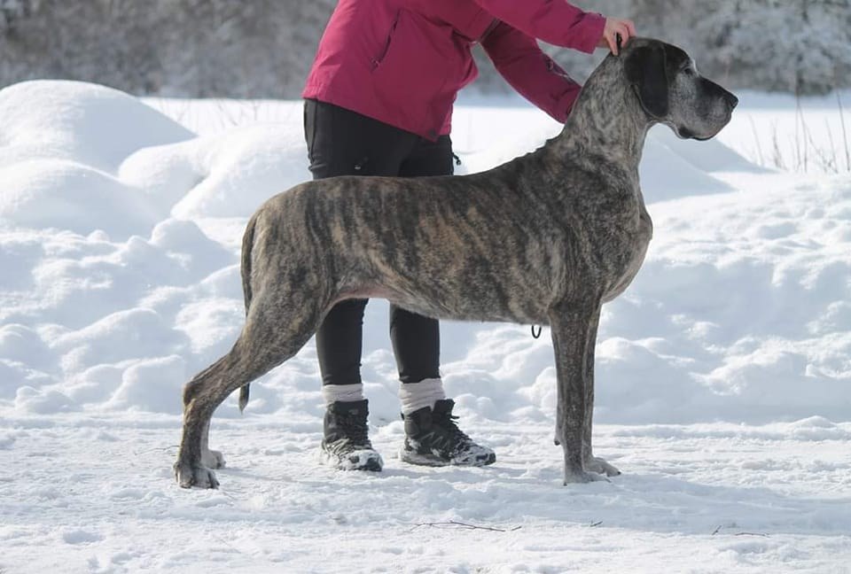 | Баланс в передней части включает в себя длину и расположение плеча и предплечья, а также длину передней лапы. Передняя часть корпуса своей формой и расположением вносит вклад в баланс всей собаки. Большая грудь, выставленная вперед у собаки, также негативно влияет на баланс [Автор не показал фото, но мы можем это сделать на примере скандинавских догов– прим.перев.]. |
Корпус
Часть между передними и задними конечностями составляет примерно половину длины собаки. Стандарт требует "короткой ровной спины", "широкой поясницы", "широкой, глубокой" груди". "Грудь с хорошо выраженными ребрами опускается до локтя". "Нижняя линия контура тела...выделяет... подтянутый живот".
Широкая поясница, широкая глубокая грудь, опускающаяся до локтя и выраженная грудная клетка способствуют мощи. Хорошо выраженная подтянутость является частью элегантности.
| 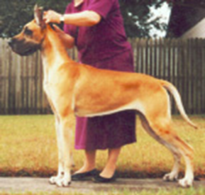 | На фото слева короткая ровная спина, широкая глубокая грудь, грудь до локтя обеспечивают почти квадратный профиль. Хотя собака хорошо подтянута, у нее есть юбка (кусок кожи) ниже поясницы, которая скрывает часть паха. Юбка является характерной чертой гончих собак, и это вполне уместно, так как доги выполняли функции охотников на крупную дичь. Если юбка слишком глубокая, из-за чего линия подворота выглядит прямой, собака может выглядеть грубо - слишком много плоти, слишком мало элегантности со скрытым пахом. |
| 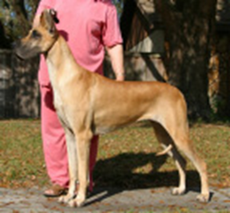 | На фото слева средняя часть тела, между передними и задними четвертями, составляет половину длины собаки. Посмотрите на разницу в длине всего тела собаки по сравнению с длиной нижней линии контура от локтя до бедра. |
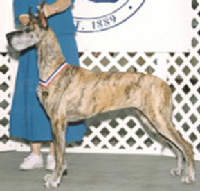 | Сбалансирована ли собака на фото слева? Ее голова и шея сбалансированы. Плечо отведено назад, хотя верхняя часть лапы могла бы выходить больше. Насколько сильно длина тела нарушает баланс? Длина определяется грудной клеткой, а не поясницей. Длина определяется нижней линией контура тела, а также его общей длиной. |
Влияние контура на баланс
| 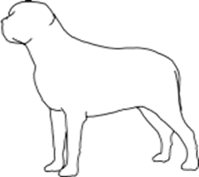 | Грубый. Мощь без элегантности. Спрямленные линии. |
|  | Утонченный. Элегантность без элегантности. Крайне подтянутый дог. |
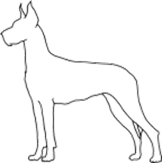 | Сочетание мощи и элегантности. Хорошо выраженный контур. |
Задняя четверть
Задняя "четверть" - четверть собаки находящаяся между началом крупа и до конца седалища. Линейнвй размер передней и задней части собаки примерно равны у сбалансированного дога. Круп "широкий" - со стороны и сзади и "совсем немного наклонный". Широкий круп обеспечивает широкую и мускулистую верхнюю часть бедра. Верхняя часть бедра и нижняя (вторая) часть бедра имеют одинаковую длину. Зад должен быть хорошо сбалансирован, соответствовать передней части. Бедра относительно короткие ("хорошо опущенные").
| 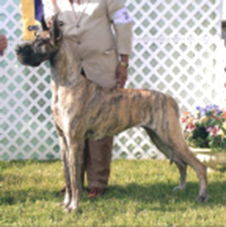 | У тигровой суки длина крупа не гармонирует с шириной верхней части бедра. Более широкое и мускулистое бедро выглядело бы лучше. Верхняя часть бедра имеет ту же длину, что и нижняя. Нижняя часть бедра имеет хорошую ширину. |
| 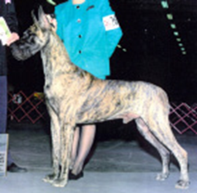 | У тигрового кобеля хорошие угловатые передние и задние конечности. Бедра относительно короткие. |
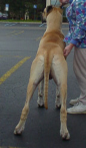 | У палевой собаки слева с широкий круп обеспечивает сильную мускулатуру бедер сзади. |
Баланс при движении
Общий вид и баланс собаки должны сохраняться во время движения. При описании движения рысью стандарт предусматривает следующее:
"Длинные, легкие шаги" "Голова вынесена вперед". "Верхняя линия контура... ровная и параллельная земле". "Длинный охват..." передняя нога "опускается на землю ниже носа" "Задняя часть... соответствует передней".
| 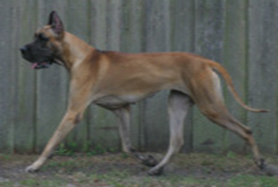 | Шея вытянута под углом примерно 45 градусов. Передняя нога опускается на землю на линии носа. Выброс передних и задних ног примерно одинаков. Обе ноги не поднимаются высоко от земли. Задняя нога приземляется на место, только что освобожденное передней ногой. Спина ровная, без наклона вверх или вниз. Передняя лапа и бедро вытягиваются. |
| 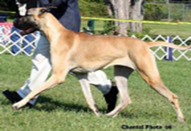 | Линия задней ноги ровная - собака движется как единое целое. Хорошая синхронизация ног. Передняя и задняя части вытянуты. Хотя это движение лучше, чем большинство других, обратите внимание, что передняя нога вытянута больше, чем задняя, и выше, чем передняя нога на фото выше. Вытяжение передней ноги на первом фото в большей степени включает верхнее плечо и является более эффективным движением. |
| 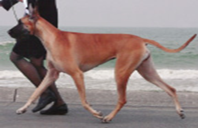 | Спина ровная, голова и шея вытянуты. Выброс и отступ эквивалентны. Синхронность постановки ног внизу правильная. Нога и носок вытянуты. Движение как единое целое. |
| 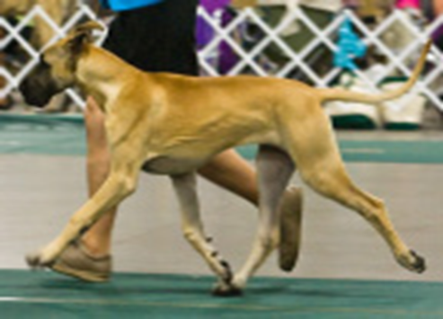 | Обратите внимание на симметрию передней и задней частей, разгибание и сгибание локтевого, коленного и крестцового суставов. Задняя линия остается ровной. Она представляет собой "единое целое". |
| 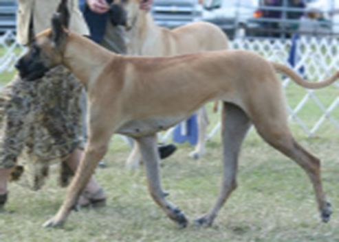 | Вытянутость передней части не соответствует задней. Линия спины "бежит вниз по склону". Передняя нога не опускается под носом. |
Продолжение следует